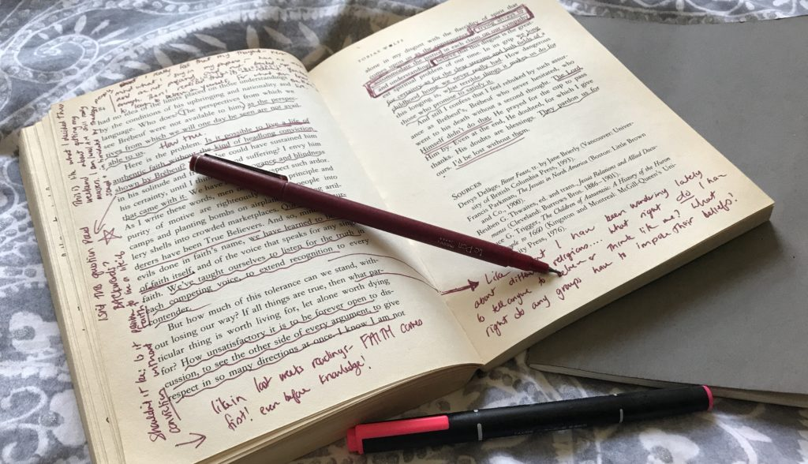

| Dalam pelajaran Bahasa Indonesia, saya belajar tentang teks resensi. Di dalam materi ini, saya telah mengerti hakikat sampai kebahasaan yang terdapat dalam teks reseni. Ternyata, teks resensi tidak semudah yang saya bayangkan. Teks ini memiliki struktur yang padat dibandingkan teks lainnya. |
|---|
|  |